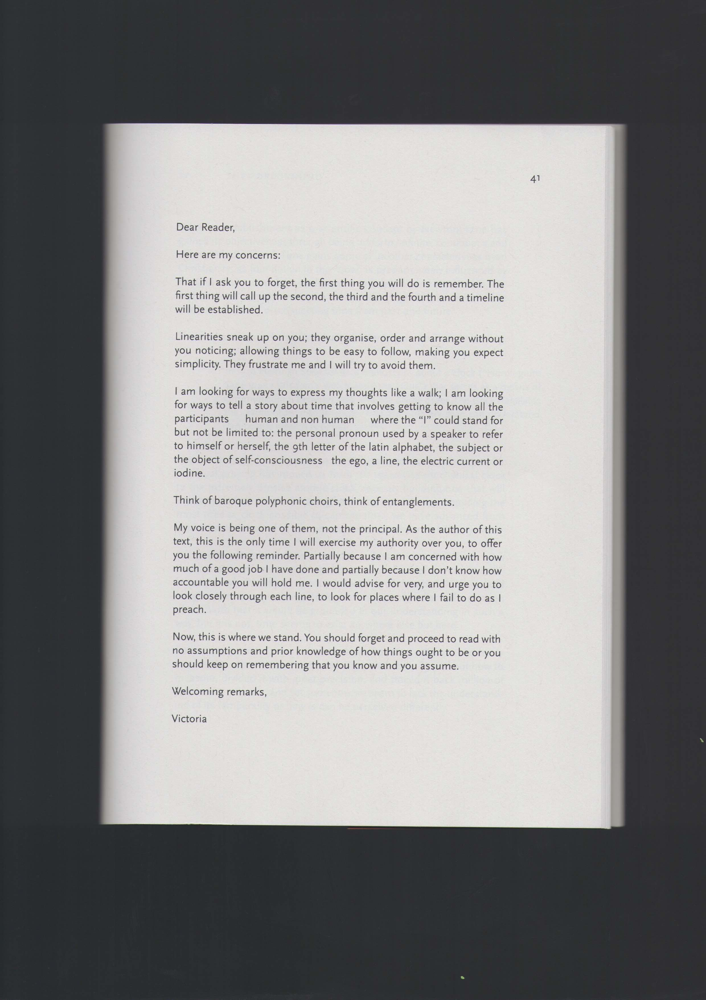

VICTORIA DOUKA-DOUKOPOULOU
lives in the hague (nl) where she graduated with a BA in Artscience from The Royal Academy of Art, The Hague and The Royal Conservatory in 2017. She currently takes care of the archive of the Sonic Acts Festival and along side Titus & Stef she runs the experimental publication and distribution project oneacre.online. As a filmmaker, she gathers and assembles the invisible, the unthinkable and the unappreciable and usually turns them into films, sometimes into bio-things.
⋅
⋅
⋅
⋅
so let's say, you walk down a path and you run into a snag, a dead tree, a unexpected drawback — a soarvi
